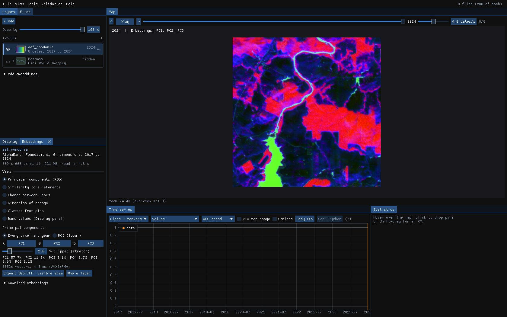
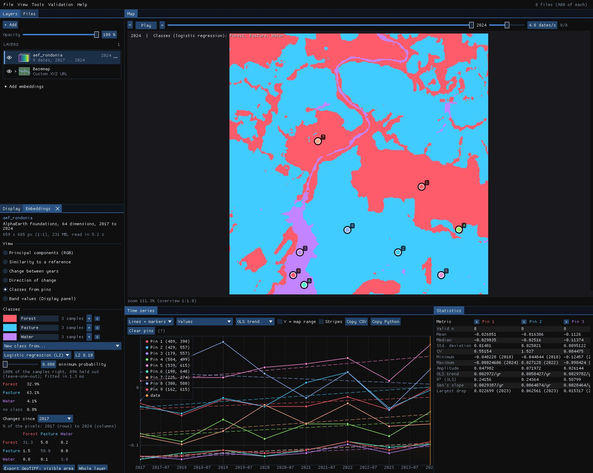
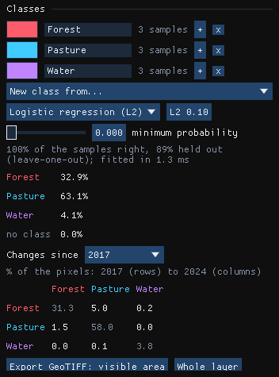
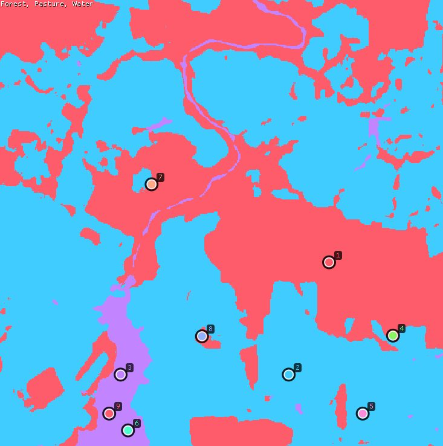
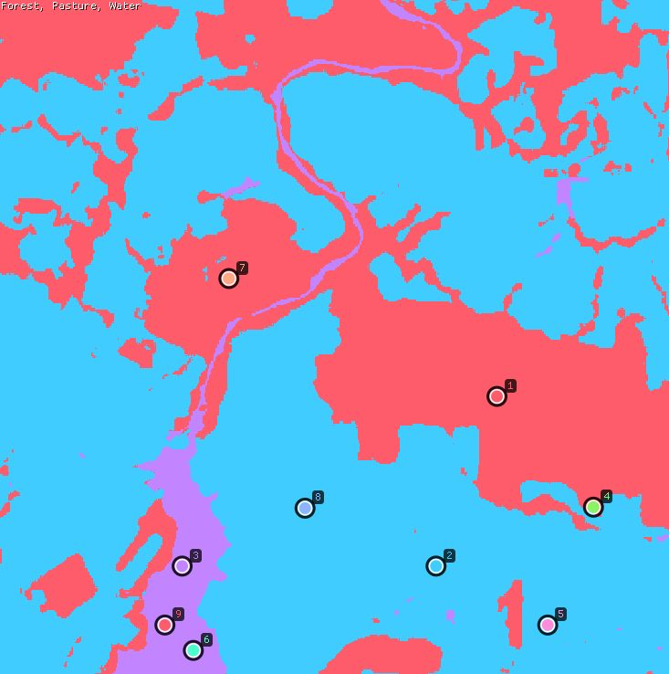
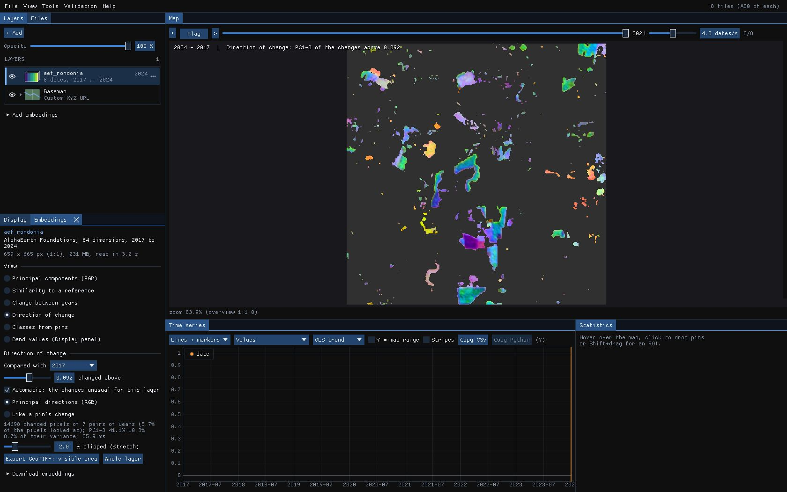
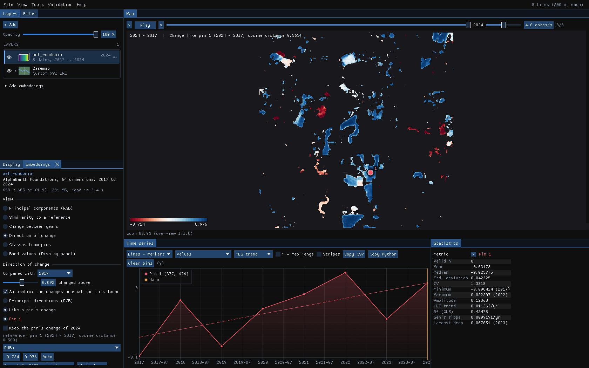

01The idea
AlphaEarth Foundations (Google DeepMind; 64 dimensions, from optical, radar, lidar and climate data) and TESSERA (128 dimensions, from Sentinel-1 and -2 series) give every 10 m pixel one vector a year. A forest and a pasture end up far apart; two pastures close together, wherever they are. Janus compares the vectors directly: no training of a network, and every view is computed again in milliseconds as you move the mouse or change a setting.
- Embedding
- A pixel's vector for a year. Its dimensions (
A00,A01...) have no physical unit. - Cosine similarity
- How alike two vectors point: 1 the same direction, 0 unrelated. 1 − cosine is the cosine distance.
- Few-shot classification
- Classes learnt from a handful of samples (here three each), which the embeddings make possible: the model that made them has done the hard part.
- Difference vector
- A pixel's vector one year minus its vector another year: the change itself, which has a direction as well as a size.
02The example
AlphaEarth's embeddings of a square of central Rondônia, Brazil, 6.6 km a side (659 × 665 pixels of 10 m), for each year from 2017 to 2024: one GeoTIFF a year of 64 bands, 231 MB in all. Forest, pastures opened in it, a river and a lake. (The AlphaEarth Foundations Satellite Embedding dataset is produced by Google and Google DeepMind, under CC-BY 4.0.)
To get them for your own area: in the Layers panel, unfold Add embeddings, pick the source (AlphaEarth or TESSERA), the years and the area (the visible area or the ROI), and Add embeddings. Janus downloads them in the background, without Python, into %LOCALAPPDATA%\Janus\results\embeddings, and adds them as a layer. A folder of such files (or Zeit's save_raster of embeddings) opens directly, like any series: Janus recognises them by their band names and opens the Embeddings panel.
03The views
The Embeddings panel draws the layer in one of several views:
- Principal components (RGB)
- Three principal components as red, green and blue, stretched between the 2% and 98% percentiles. One PCA for every year, so a colour means the same in each year; ROI (local) fits it on the ROI's pixels only, to spread the colours over the differences inside it.
- Similarity to a reference
- The cosine similarity of every pixel to the vector under the cursor (live), a pin, or the ROI's mean, in the year shown or a fixed one.
- Change between years
- The cosine distance between each pixel's vectors in the year shown and the previous year, or a fixed year.
- Direction of change
- What kind of change, as colour (section 06).
- Classes from pins
- A class map from a few samples (section 04).


The PCA takes up to 65,536 vectors of every year and here took 4.5 ms (AVX2 and FMA). The view is a quick way to see what the embeddings separate before classifying anything: if two covers you care about have the same colour in every combination of components, no classifier will part them.
04Classes from pins
Choose Classes from pins, go to a year (2024 here) and drop pins on places you know: three in the forest, three in pastures, three on the water. New class from... makes a class of a pin's vector in the year shown; each class's + adds another pin, or up to 200 pixels of the ROI, to it. Name the classes and pick their colours in the list.




- Logistic regression (L2)
- Multinomial logistic regression on the standardised dimensions, each class weighing the same whatever its number of samples, with an L2 penalty (0.1 by default; higher with fewer samples). Solved by L-BFGS, scikit-learn's solver. Its score is the probability.
- Nearest centroid (cosine)
- Each class's mean direction; a pixel takes the class it points closest to. Its score is the cosine.
- Minimum probability
- Below it a pixel has no class and is drawn grey: what the samples do not describe.
The fit took 1.3 ms. All 9 samples are classified right, and 89% when each is left out in turn (leave-one-out, up to 60 samples; 5-fold beyond): one sample of 9 lands in another class when the model has not seen it. In 2024, 32.9% of the square is forest, 63.1% pasture and 4.1% water.
Held-out, but close
Samples of one ROI are neighbours, and pixels of one field look alike: the held-out share is then optimistic. Check the map against places you know, or validate it with a sample of its own (Validation guide).
05What changed into what
The classifier fitted on the 2024 samples classifies every year: move to another year, or play the series, and the map follows. Changes since a year adds a table of the share of pixels going from each class then (rows) to each class in the year shown (columns).




| 2017 \ 2024 (% of the pixels) | Forest | Pasture | Water |
|---|---|---|---|
| Forest | 31.3 | 5.0 | 0.2 |
| Pasture | 1.5 | 58.0 | 0.0 |
| Water | 0.0 | 0.1 | 3.8 |
Between 2017 and 2024, 5.0% of the square went from forest to pasture and 1.5% the other way: the forest fell from 36.5% to 32.9%. The diagonal is what stayed. The small off-diagonal cells (forest to water, water to pasture) are mostly pixels at the edges of the river, where a 10 m pixel is part of both.
06Direction of change
The change view says how much a pixel changed; Direction of change says what kind of change. It takes the difference vectors of the pixels that changed, every pair of years compared, and draws their first three principal components as RGB: the same colour for the same kind of change, whatever the year.


- Compared with
- The previous year (each year against the one before) or a fixed year; here 2017.
- Changed above
- The cosine distance above which a pixel changed. Automatic sets it to the changes unusual for this layer: the median of the distances plus 4 times their spread (1.4826 × the median absolute deviation), since most pixels do not change from one year to the next. Here 0.092.
- Principal directions (RGB)
- The PCA of the changed pixels' differences: up to 65,536 of them, from all the pairs of years.
The fit used 14,698 changed pixels of the 7 pairs of years (5.7% of the pixels it looked at) in 35.9 ms; its first three components hold 41.1%, 10.3% and 8.7% of their variance. Checked against the class maps of section 05, the pixels that went from forest to pasture are green, cyan and blue, and those from pasture to forest red and orange: opposite changes get opposite colours.
07Like a pin's change
To find every change of one kind, drop a pin on an example and choose Like a pin's change: each changed pixel gets the cosine of its difference vector to the pin's, 1 for the same kind of change, −1 for the opposite. Pixels that did not change stay empty.


The pin sits in a forest cleared between 2017 and 2024; its own change has a cosine distance of 0.563, far above the threshold. Of the pixels the class maps call forest in 2017 and pasture in 2024, the ones that changed beyond the threshold are almost all blue, and the pasture that grew back is red. Keep the pin's change of 2024 fixes the reference, so that playing the years looks for that same change in each of them: when else was forest cleared?
08Saving the maps
Export GeoTIFF: visible area or Whole layer (also File → Export embeddings as GeoTIFF...) writes the view shown at full resolution, computed again from the vectors in the files rather than from the reduced copy on screen, as Float32 on the layer's own grid:
| View | Bands |
|---|---|
| Classes from pins | 2: the class and its probability (or cosine); the class names and colours in the metadata. |
| Direction of change | 3: the components of the change between the two years, named with their share of the variance. |
| Like a pin's change | 1: the cosine of each change to the pin's. |
| Principal components | 6: the scores along each component (not stretched). |
| Similarity, change | 1: the cosine similarity, or the cosine distance. |
The model, the years, the reference and the classifier go in the file's metadata. The class map can then be validated, or cleaned with Tools → Post-processing (classes) (Deep learning guide).
09Against scikit-learn
The classifier solves the same problem as scikit-learn's LogisticRegression (multinomial, L2, L-BFGS) to the same gradient. tools/bench_embeddings_sklearn.py compares them on 1000 × 1000 pixels of 64 dimensions:
| Step | Agreement | Janus vs scikit-learn |
|---|---|---|
| Fit and held-out accuracy | the same probabilities (to 4e-7) and classes | 2–5× faster |
| Classes of a year (1 Mpx) | the same classes | 8× on one thread, 39× on 19 |
| PCA of the direction of change | the same components | 2–4× faster |
10What next
- Validate the class map: export it and follow the Validation guide: strata, a sample, blind labels, accuracy and areas.
- A trained network: for more classes or less separable ones, the Deep learning guide trains TempCNN or L-TAE on the series itself, and Presto makes embeddings of your own series.
- Hyperspectral scenes: the principal components and the similarity views also work on a scene of one band per wavelength (EnMAP, PRISMA, EMIT), each pixel's spectrum as its vector; its materials can be unmixed too (Unmixing guide).
- Script it:
zeit.load_embeddings,zeit.similarityandzeit.embedding_changeread the same files and compute the similarity and the change in Python.
11References
- Brown, C. F., et al. (2025). AlphaEarth Foundations: An embedding field model for accurate and efficient global mapping from sparse label data. arXiv:2507.22291.
- Feng, Z., et al. (2025). TESSERA: Temporal embeddings of surface spectra for Earth representation and analysis. arXiv:2506.20380. (geotessera.org)
- Liu, D. C., Nocedal, J. (1989). On the limited memory BFGS method for large scale optimization. Mathematical Programming, 45, 503–528.
- Pedregosa, F., et al. (2011). Scikit-learn: Machine learning in Python. Journal of Machine Learning Research, 12, 2825–2830.
- Zeit: the library behind the tools of Janus.